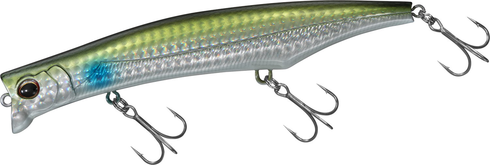
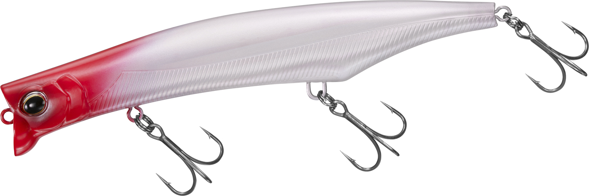
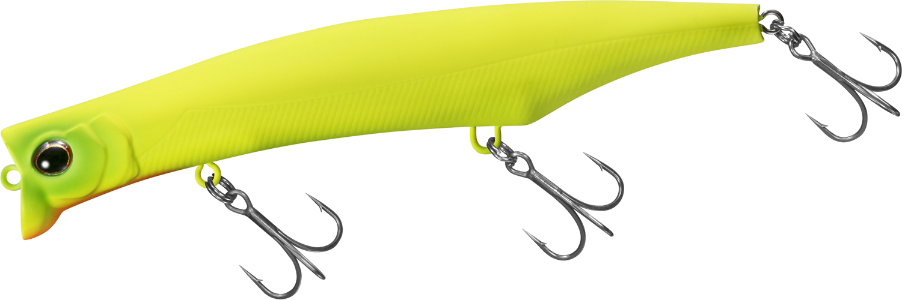
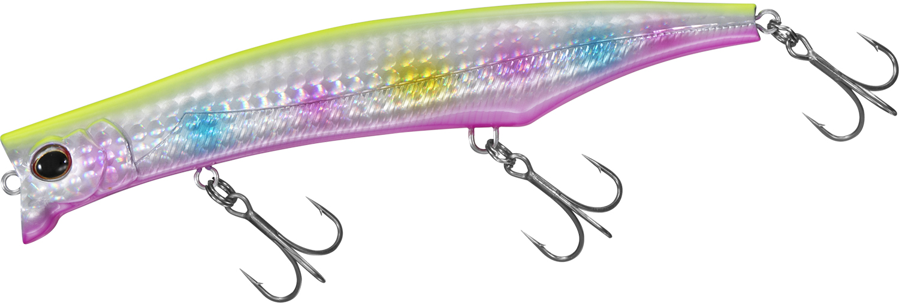

シャロール126F-SSR
（MORETHAN SHAROLL 126F-SSR）
シャロール126F-SSR（MORETHAN SHAROLL 126F-SSR）はDAIWA（ダイワ）のシーバスブランド「モアザン」のスーパーシャローミノーです。
「干潟マスター」山内勝己監修のもと、広大なシャローエリアを攻略するために開発された1本。メインレンジ20〜30cmの激浅レンジを長く引けるのが最大の魅力で、遠投した先でもほとんど潜らず、根掛かりを気にせずシャローを探れます。

画像出典:DAIWA公式HP
スペック
- メーカー
- DAIWA（ダイワ）
- タイプ
- フローティング（スーパーシャローミノー）
- 全長
- 126mm
- 自重
- 22g
- レンジ
- メイン20〜30cm（最大潜行深度0.4m）
- フック
- #5
- リング
- #3
- 飛距離
- Max69.0m／Ave64.6m（当社テスト）
- アクション
- ロール＋フラツキ
- ターゲット
- シーバス
- 価格
- 2,000円（税抜）
▼今すぐチェック

シャロール126F-SSRの特徴
干潟マスター渾身の、激浅レンジを長く引けるスーパーシャローミノー
-
メインレンジ20〜30cmの激浅レンジ攻略
広大なシャローエリアを攻略するために開発されたスーパーシャローミノー。遠投した先でもほとんど潜ることなく、シャローエリアでの根掛かりを気にせず使える。
-
ロール主体のアクションと、デッドスローのフラツキ
ロールを主体とした振り幅弱めのアクションで、止水域でも流水域でも安定して泳ぐ。デッドスローではフラツキアクションが発生し、これを出すためにあえて磁着しないウエイトボールを配置している。
-
マグネット重心移動システムで安定した飛距離
キャスト時はウエイトボールがテール側最後方へ移動して安定した飛距離を実現。レールは斜めに入っていて、ウエイトが定位置へ戻りやすく、アクションの立ち上がりも良い。広大なシャローを探るサーチベイトとしても威力を発揮する。
シャロール126F-SSRの使い方
基本はただ巻き。遠投して、メインレンジ20〜30cmを一定のスピードで長く引いてくる。ロール主体の控えめなアクションなので、スレたシーバスにも違和感を与えにくい。
反応がない時は、リトリーブスピードを落としてデッドスローに。フラツキアクションが出て、追ってきた魚に食わせの間を作れる。流れのある場所でも止水域でも泳ぎが安定するので、ドリフトでもただ巻きでも使えます。
シャロール126F-SSRの得意な状況
干潟や河口、遠浅のサーフなど、水深の浅い広大なシャローエリアでシーバスを探す状況が最大の出番。
普通のミノーでは底を擦ったり根掛かりしたりする浅場で、レンジを外さずに長く見せたい時に選びたい1本です。
ワンポイント
着水後すぐに巻き始めると、重心が戻ってすぐにアクションが立ち上がります。浅場ではロッドを立て気味にすると、さらにレンジを浅く保てます。
デッドスローのフラツキは、巻きスピードを極限まで落とした時に出るので、反応が渋い時ほどゆっくり巻くことを意識しましょう。
オススメカラー
シャロール126F-SSRは全9色展開。オススメのカラーを厳選して紹介します。

3Dイナッ子イナッコを再現したリアル系。干潟や河口のイナッコパターンの基準カラーに。

パールレッドヘッド定番のレッドヘッドにパールボディ。ナイトゲームやマズメのパイロットに。

マットチャートシルエットがはっきり出るマットチャート。濁りやローライト時に。

不夜城常夜灯周りのナイトゲームで定番のカラー。明暗の釣りに。
画像出典:DAIWA公式HP
シャロール126F-SSRに似ているルアー
-
 カゲロウ124F
メガバス
詳細はこちら＞
カゲロウ124F
メガバス
詳細はこちら＞
124mmのシャローランナーの定番。レンジ0〜20cmの表層特化で、干潟や河口のシャローを広く探るという役割がシャロール126F-SSRと重なる。
-
 アイザー125F
ブルーブルー
詳細はこちら＞
アイザー125F
ブルーブルー
詳細はこちら＞
125mm・22gのシャローランナー。同じサイズ・重さで、強めのアクションで広く探りたい時はアイザー、控えめなロールで見せたい時はシャロールと使い分けられる。
-
 モニカ125F
シマノ
詳細はこちら＞
モニカ125F
シマノ
詳細はこちら＞
125mm・22gのシャローランナー。水面直下〜30cmを引けるドリフト向きの1本で、同じ浅いレンジを攻める選択肢になる。